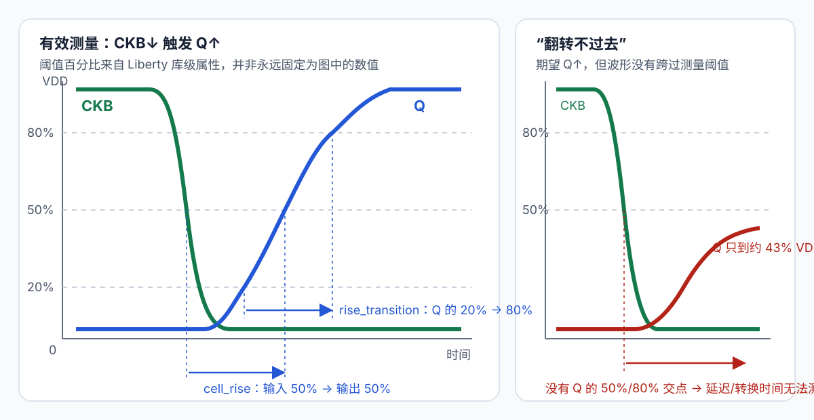

第 32 章 表征故障排查、签核与库级回归
从 DRC/LVS/PEX 到 Liberty 查找表、失败波形和芯片级回归
- 搭建外部 DRC/LVS/ERC/PEX 与特征化（characterization）的质量门禁。
- 能读懂 NLDM 的
cell_rise/cell_fall、输出转换时间和二维索引。 - 能判断“翻转不过去”、
1e31、空表项和部分网格失败分别意味着什么。 - 验证 GDS、LEF、CDL、Verilog 和 Liberty 的一致性。
- 用相邻拼接、引脚可接入性、P&R、STA 和可复现性回归完成库级验收。
.lib。32.1 七级质量门
- 结构检查：文件可解析，单元/引脚/单位/层/尺寸符合格式规范。
- 物理检查：晶圆厂 DRC、ERC、天线效应、密度/DFM 和边界拼接。
- 电路等价：晶圆厂 LVS，包含体端、Vt、W/L/多指和端口。
- 寄生提取：通过 LVS 的版图运行 PEX，检查 R/C 网络与单位。
- 特征化：按 PVT、输入转换时间/输出负载和时序弧生成时序/功耗模型。
- 视图一致性：GDS/LEF/CDL/Verilog/Liberty 的名字、功能、引脚和尺寸一致。
- 集成回归：综合→P&R→STA/功耗→DRC/LVS 冒烟测试，验证真实使用流程。
任何一级失败都不能用后一级的通过结果抵消。例如 STA 能跑完不代表 LEF 布线阻挡正确，LVS 匹配也不代表特征化使用了正确的 PVT 条件。
32.2 外部物理签核
| 检查 | 单元级 | 库/拼接级 |
|---|---|---|
| DRC | 完整验证规则文件下无未解释违规 | 相邻拼接、多行、特殊单元组合 |
| ERC/闩锁效应 | 井/体端/接触、电源、器件电压 | 接触间隔、跨单元行的井、电源域边界 |
| 天线效应 | 内部栅/金属面积比与保护结构 | P&R 中长线后的修复单元/二极管策略 |
| 密度/DFM | 局部最小/最大、禁用图形 | 填充后、窗口跨单元边界的密度 |
| EM/IR | 电源轨/通孔的电流能力假设 | 行级电源网络、最大活动率和 PVT 条件 |
规则豁免（waiver）必须包含规则、位置、理由、责任人、风险和晶圆厂/项目批准；“生成器总会报这个”不是豁免理由。
32.3 LVS：参数和体端都属于等价性
生产级 LVS 比较不止拓扑。为每个单元保存：
- reference CDL/SPICE 与端口顺序；
- 提取器件类型、Vt/电压选项；
- D/G/S/B 网络；
- W/L/nf/m、并联/串联归并策略和容差；
- 短路、开路、未匹配器件/网络计数均为零。
对单元内不含阱/衬底接触的 tapless 架构，仍需在晶圆厂 LVS/ERC 流程中使用官方支持的单元上下文或运行配置，不能简单删除体端后宣布匹配。
32.4 PEX 与仿真基线
每个需要特征化的单元采用经过 LVS 的提取后网表。先做三个合理性检查：
- 无寄生/原理图仿真与逻辑真值表一致；
- PEX 仿真在轻载典型角仍功能正确，无非预期浮空；设计允许的高阻/动态节点要按工作状态、保持时间和泄漏要求单独验证；
- 输入电容、输出电容和关键电阻数量级与版图变化趋势一致。
当扩大器件 W 后，若提取后的输入电容反而显著下降，应先怀疑单位、提取层或网表关联，不要直接把结果写进 Liberty。
32.5 特征化到底在重复什么
通过 LVS 的原理图/PEX 网表 + PDK SPICE 模型 + PVT
│
├─ 定义有效时序弧和其他引脚的静态状态
├─ 扫描输入转换时间（slew）
├─ 扫描输出负载电容（load）
├─ 施加输入/时钟波形并运行瞬态仿真
└─ 在规定电压阈值上测 delay、transition、power
↓
Liberty 二维查找表与时序约束| 输入条件 | 它改变什么 | 错了会怎样 |
|---|---|---|
| 晶体管/PEX 网表 | 器件连接、尺寸和版图寄生 | 开短路、端口顺序或寄生单位错误会让功能/延迟失真 |
| PVT 与模型 section | 器件速度、阈值电压、漏电和电源条件 | 模型角、电压或温度不匹配会生成标错条件的库 |
| 时序弧和敏化条件 | 谁变化、谁保持、预期哪个输出变化 | 测到错误边沿，或者输出根本不会翻转 |
| 输入转换时间 | 输入从低到高/高到低的快慢 | 过慢输入会增加延迟、短路电流，并可能暴露内部竞争 |
| 输出负载 | 输出需要充放的总电容 | 负载越重通常越慢；超出驱动范围可能无法在仿真窗口内达到阈值 |
| trip points | 延迟和转换时间在哪些电压百分比上量 | 波形看似变化却未跨过要求阈值时，测量仍然失败 |
32.6 先读时序弧，再读表格
用户截图中的关键部分可抽象成：
pin (Q) {
timing () {
related_pin : "CKB";
timing_sense : non_unate;
timing_type : falling_edge;
cell_rise (...);
rise_transition (...);
cell_fall (...);
fall_transition (...);
}
}| 字段 | 在这条弧里的准确含义 | 不代表什么 |
|---|---|---|
pin(Q) | 这些表描述输出 Q | 不是描述 CKB 自身的输出波形 |
related_pin="CKB" | 延迟以 CKB 的测量阈值交点为起点 | 不是说 Q 与 CKB 逻辑值相同 |
timing_type=falling_edge | CKB 的 1→0 是有效采样边沿 | 不是说 Q 一定下降 |
timing_sense=non_unate | 只看 CKB 上升/下降无法决定 Q 的方向；Q 取决于被采样数据和状态 | 不是“时序弧无效” |
cell_rise | 有效 CKB↓ 后，Q 从 0→1 的 clock-to-Q 延迟 | 不是输入 CKB 的上升延迟 |
cell_fall | 有效 CKB↓ 后，Q 从 1→0 的 clock-to-Q 延迟 | 不是由 falling_edge 自动决定只需要这一张表 |
测 Q 上升时，表征平台必须先让 Q 处于 0、让 D 在建立时间之前稳定为 1，再施加 CKB↓；测 Q 下降则先让 Q=1、D=0。复位、置位、扫描使能和其他模式脚必须处于允许功能采样的状态。
32.7 NLDM 四张时序表分别量什么
| 表名 | 测量对象 | 以截图 CKB↓→Q 为例 | 常用单位 |
|---|---|---|---|
cell_rise | 输出上升的传播延迟 | t(Q↑跨输出上升阈值) - t(CKB↓跨输入下降阈值) | 由 time_unit 定义 |
cell_fall | 输出下降的传播延迟 | t(Q↓跨输出下降阈值) - t(CKB↓跨输入下降阈值) | 由 time_unit 定义 |
rise_transition | Q 自身上升沿的快慢 | t(Q↑跨 slew_upper) - t(Q↑跨 slew_lower) | 由 time_unit 定义 |
fall_transition | Q 自身下降沿的快慢 | t(Q↓跨 slew_lower) - t(Q↓跨 slew_upper) | 由 time_unit 定义 |

input_threshold_pct_*、output_threshold_pct_* 与 slew_*_threshold_pct_*。rise/fall 在 cell_rise/cell_fall 和 rise_transition/fall_transition 中都指被描述的输出引脚方向。输入或时钟边沿由 related_pin、timing_type、timing_sense 和条件共同决定。32.8 index_1/index_2/values 怎样组成二维表
index_1 和 index_2 没有脱离模板的固定含义。必须先找到表名引用的模板：
lu_table_template (delay_template_7x7) {
variable_1 : input_net_transition;
variable_2 : total_output_net_capacitance;
}若模板如上，index_1 才是输入/时钟转换时间，index_2 才是输出总电容；values 的第 1 行对应 index_1[0]，行内第 1～7 列依次对应 index_2[0..6]。第 3 行第 5 列就是 index_1[2] 与 index_2[4] 的交点。
| 截图中的线索 | 很可能的解释 | 最终证据 |
|---|---|---|
index_1=0.005…1.2 | 数值形状像 5 ps～1.2 ns 的 CKB slew | delay_template_7x7.variable_1 与 time_unit |
index_2=0.0001…0.104076 | 数值形状像输出负载电容 | variable_2 与 capacitive_load_unit |
最后一个 index_2 等于 max_capacitance=0.104076 | 进一步支持 index_2 是输出负载 | 仍应读模板，不能只靠数量级猜 |
模板也可以反过来定义。例如本地 librecell-lib/test_data/gscl45nm.lib 把 variable_1 定义为 total_output_net_capacitance，把 variable_2 定义为 input_net_transition。因此不能背诵“index_1 永远是 slew”。约束表又可能使用 related_pin_transition × constrained_pin_transition，功耗表常用 input_transition_time × total_output_net_capacitance；每张表都应追到自己的 template。
32.9 “翻转不过去”与 1e31
“翻转不过去”通常是口语：表征平台期望某个输出产生完整的 0→1 或 1→0 边沿，但波形没有按测量规则完成该边沿。它不只包含“Q 完全不动”，还包括：
- Q 方向相反，或初始值就处于目标值，因而没有预期边沿；
- Q 有变化但只到中间电压，没有跨过 delay 的输出阈值；
- Q 跨过 50% 却没有跨过 80%/20%，所以延迟可能可测而 transition 不可测；
- Q 最终会翻转，但在仿真截止时间前没有达到阈值；
- 波形振荡、多次越过阈值、进入亚稳态，无法选出合格的单一边沿；
- SPICE 没有收敛、测量表达式找不到交点，或者生成的 testbench 本身接错。
1e31 的判断：截图中整片极大值与空项强烈提示无效结果，常见解释是工具/脚本的失败占位；但仅凭截图不能确认该工具的具体编码约定，更不能确定根因。应核对工具说明、日志与生成的 SPICE deck。这些异常表在证明测量有效之前不能作为合格 Liberty 交付，不能把 10³¹ 当成真实的超大延迟继续插值。对截图的直接结论：Q 相对 CKB 下降沿的 cell_rise 和 rise_transition 49 个点全部为 1e31，表示在全部 7×7 slew/load 组合中都没有得到有效的 Q 上升延迟和 Q 上升转换时间。连最轻负载、最快输入都失败，所以现有证据不支持简单归因于“单元驱动太弱”；应优先怀疑时钟极性、D/初始状态、复位/扫描控制、端口映射、电源/模型、PEX 或测量设置。还要单独检查下方 cell_fall/fall_transition：若只有上升失败，更像上拉路径或上升激励问题；若两边都失败，更像系统性配置或电路问题。
32.10 从失败图案缩小根因
| 表格失败形状 | 优先怀疑 | 下一步证据 |
|---|---|---|
| rise/fall 的 49 点全部失败 | 电源、模型、pin 顺序、时钟有效边沿、复位/扫描状态、整个单元功能 | 最小负载单点手工瞬态仿真 |
| 只有 Q 上升全部失败 | PMOS 上拉开路/太弱、D=1 激励或初始 Q=0 未建立、置位/复位条件错误 | 画 Q 与上拉关键内部节点；再测 Q 下降作对照 |
| 只有 Q 下降全部失败 | NMOS 下拉开路/太弱、D=0 激励或初始 Q=1 未建立 | 画 Q 与下拉关键内部节点 |
| 只在高负载列失败 | 驱动不足、负载网格超规格、仿真时间过短 | 延长仿真作诊断并检查最终电平；重新审查 max_cap |
| 只在慢 slew 行失败 | 内部竞争、脉宽/建立时间不足、慢边沿导致异常状态 | 看时钟、数据与内部门控节点的相对时序 |
| 原理图网表通过，LPE/PEX 失败 | 提取开短路、端口映射、寄生单位或极端 RC | LVS/PEX 报告、两版同一 testbench 的波形差分 |
| cell delay 有值但 transition 失败 | 输出过了 delay 阈值却没有走完整个 slew 阈值区间 | 检查 Q 的最终电压、20/50/80% 交点和仿真终止条件 |
32.11 不要先重跑 7×7：先救活一个点
以截图最小网格点为例，先只调试 index_1=0.005、index_2=0.0001。假设模板确认它们分别是 CKB slew 和 Q load，Q 上升的最小测试应满足：
1. VDD/VSS、模型 section、温度与库名一致
2. reset/set/scan-enable/clock-enable 全部置于功能模式
3. 先通过预置周期或可靠初始过程得到 Q=0
4. D=1，并在 CKB 有效下降沿之前留足建立时间
5. 对 Q 接最小负载 0.0001（单位由 capacitive_load_unit 决定）
6. 施加 CKB: 1→0；保存 VDD、VSS、CKB、D、Q 和关键内部节点
7. 检查 Q 是否依次跨过 20%、50%、80%，以及发生时间- 读日志的第一个失败：不要只看最终
.lib；搜索 convergence、measure failed、no crossing、timeout、unknown model、floating node。 - 打开实际生成的 SPICE deck：核对 subckt 实例的端口顺序、电源、模型 include、初始条件、D/CKB/复位/扫描激励和负载单位。
- 手工跑最轻负载单点：确认单元能完成逻辑功能，再谈 7×7 插值表。
- 做 Q 下降对照：Q 上升与下降的差异可快速区分上拉/下拉路径问题和系统性配置问题。
- 原理图与 PEX 使用同一平台对比：原理图也失败先查电路/激励；只有 PEX 失败再查 LVS、端口与寄生。
- 逐步增加 load，再逐步增加 slew：记录从哪个边界开始失效，最后才恢复完整 7×7。
32.12 截图里的 rise_power/fall_power
internal_power 描述内部节点充放电、短路电流等相关的内部能量模型。判断 rise/fall 的对象，先看包住它的 pin(...)，不能只看 related_pin。若完整层次是 pin(Q) → internal_power → rise_power，rise/fall 指 Q 的上升/下降；related_pin : "CKB" 指相关激励引脚，可为表索引提供输入转换时间，并不把 rise/fall 的对象改成 CKB。若该组在 pin(CKB) 下，才对应 CKB 自身的转换。截图第二张没有显示完整外层括号，必须回到文件确认它属于哪个 pin。
pin (Q) {
internal_power () {
related_pin : "CKB";
related_pg_pin : VDD;
/* rise_power：此处 Q 上升对应的内部能量表 */
/* fall_power：此处 Q 下降对应的内部能量表 */
}
}表名虽然带 power，经典 Liberty 内部功耗表的数值表示每次相应事件的能量；分析工具结合事件率等得到平均功率。不能把表里一个数直接当作电流或静态功耗，也不能直接套用 leakage_power_unit 定义的静态功率单位；需按所用模型的单位约定进行换算。related_pg_pin 指相关电源网络，when 指适用状态。依据：Synopsys Liberty 2017.06，Internal Power Modeling（厂商原始手册的公开镜像）。
这些功耗表出现 1e31 和空字符串，同样表示结果不完整。可能是依赖的波形/状态没有建立，也可能是功耗积分或文件生成失败；不能用 0 填补，也不能删除失败点后假装表征完成。
32.13 本地 librecell-lib 的真实能力边界
| 源码证据 | 当前实际行为 | 对项目的含义 |
|---|---|---|
README.md 与 examples/run_example.sh | 提供 INV/组合单元的输入电容和 NLDM 延迟示例 | 可用于学习和组合单元原型 |
timing_combinatorial.py | 检查输出确实翻转，再按 Liberty trip points 计算 delay 和 slew | “输出未翻转”在这里会直接触发断言，而不是写出正常表值 |
main_lctime.py | 检测到 memory loop 会报告 Characterization of memory loops is not supported yet | 当前 lctime 主流程不能完成 DFF/锁存器时序表征 |
timing_sequential.py | 有顺序单元实验函数，但仍存在 NotImplementedError，且未接入主流程 | “能识别反馈环”不能推出“能生成完整顺序 Liberty” |
main_lctime.py 的 LUT 写出逻辑 | 当前硬编码 index_1=output capacitance、index_2=input transition，旁边仍有读取正确模板/单位的 TODO | 换模板、单位或工业使用前必须补实现并增加回归 |
本地组合示例可这样运行；它不能用于复现截图中的 DFF CKB→Q 弧：
cd /home/jasper/code/github/librecell/librecell-lib/examples
./run_example.sh
libertyviz -l invx1.lib \
--cell INVX1 --pin Y --related-pin A --table cell_risechar_nldm_spectre_lpe，而内容是顺序单元时钟弧；这不是本地 lctime 当前主流程能够生成的对象。诊断截图必须以你们实际使用的 Spectre/表征脚本或商业工具的 log、deck、measurement 和配置为准；librecell-lib 适合作为源码教学对照，不能替代该工具的失败码说明。32.14 组合与顺序单元分别要表征什么
组合单元
- 枚举每个输出引脚的布尔函数，以及所有可被敏化的输入→输出时序弧。
- 把其他输入固定到允许变化传播的非控制值。例如 NAND2 的 A→Y 需要 B=1。
- 在输入转换时间 × 输出负载网格上仿真四张 delay/transition 表。
- 测输入电容、内部功耗和不同输入状态下的漏电功耗。
顺序单元
DFF/锁存器除 clock-to-Q 外，还需要建立时间、保持时间、恢复时间、移除时间、最小脉宽和时钟门控检查等。约束可能为负，并依赖数据/时钟的转换时间。还要验证功能、异步置位/复位优先级与非法状态、扫描使能/SI/SO、锁存透明窗口、状态保持，以及 Liberty 与 Verilog specify/晶体管拓扑的一致性。
32.15 Liberty QA
| 类别 | 检查例 | 失败门禁 |
|---|---|---|
| 语法/格式 | 单位、template、索引维度、行列数、所有引用存在 | 空字符串、缺行/缺列、无法解析直接失败 |
| 功能 | 逻辑函数/三态、关联引脚、时序极性、条件表达式 | 与 SPICE/Verilog 不一致直接失败 |
| 完整性 | 每个有效时序弧、上升/下降、约束/功耗表均存在 | 缺弧或整张失败表不可发布 |
| 数值 | NaN/Inf/1e31、负 transition、数量级、异常跳变 | 任何失败占位值必须回到波形定位 |
| 趋势 | 负载变重时 delay/slew 的整体趋势；相邻网格突变 | 异常点需人工检查，不能机械平滑掩盖 |
| 跨 PVT | 条件标签、电压/温度、模型/文件关联无混用 | 库名与实际仿真角不一致直接失败 |
| 跨视图 | 单元/引脚/功能与 Verilog、CDL、LEF 一致 | 任何 pin/功能错配直接失败 |
不要机械要求每张延迟表严格单调；真实电路、测量噪声和条件弧可能产生局部非单调。自动检查器负责标记，最终结论必须回到波形、测试平台、PEX 和规格。相反，1e31、NaN、Inf、空字符串不是“允许的非单调”，而是明确的不完整结果。
最粗的发布前扫描可以先挡住明显失败值，但不能代替 Liberty parser、表格维度检查和波形复核：
rg -n '1[eE]\+?31|[Nn][Aa][Nn]|[Ii][Nn][Ff]|""' path/to/library.lib32.16 LEF 与引脚可接入性 QA
LibreCell 当前 LEF 输出模块的已知问题必须先修复或后处理：正确的 DIRECTION/USE、POWER/GROUND、布线阻挡、站点/对称性和必要属性。然后做：
- 把 LEF 宏单元叠加到 GDS，核对原点、尺寸、边界和每个引脚端口。
- 在所有合法朝向下枚举芯片级布线器可用的通孔/接入点。
- 验证输入、输出、电源引脚都有足够且规则合法的接入点。
- 对一个高利用率小设计运行详细布线，统计未布通网络、DRC 和绕行长度。
引脚图形越大不一定越易接入，它可能增加布线阻挡、阻塞邻近引脚或违反通孔包围/间距规则。
32.17 相邻拼接 QA
按单元边界特征聚类以减少组合，同时保留代表性极端：
- 最窄/最宽逻辑单元；
- 边缘有/无扩散区、注入层、引脚和金属的类型；
- filler/tap/endcap 与普通单元；
- R0/MX 和相邻单元行组合；
- 窗口跨边界的密度/DFM 检查。
除 DRC 外还检查 VDD/VSS 连续、井/接触意图、站点对齐和拼接后的引脚可接入性。
32.18 P&R 与 STA 冒烟测试
构造一个小而有压力的 RTL：
- 让综合实际使用 INV/NAND/NOR/AOI/OAI/MUX/DFF 及多个驱动能力档位；
- 包含长组合链、高扇出、时钟、复位和拥塞区域；
- 分别运行低/中/高利用率；
- 插入填充、阱/衬底接触、边界和天线修复单元，完成详细布线；
- 导出布局后/布线后网表、SDF、SPEF/GDS，再运行 STA 和物理验证。
| 阶段 | 门禁 |
|---|---|
| 综合 | 所有单元/时序弧可读，无缺失功能或引脚 |
| 布局 | 站点、单元行和朝向合法，无重叠，电源对齐 |
| 布线 | 100% 布通，引脚可接入性和布线器 DRC 达标 |
| STA | 所有时序端点/时序弧有模型，约束与 PVT 条件完整 |
| 流片版图 | 合并 GDS 后 DRC/LVS/antenna/density 流程通过 |
32.19 回归指标与基准管理策略
保存结构化清单，而不是只保存截图：
cell, commit, tech_version, netlist_hash, placement_hash
width, height, transistor_count, route_iterations
wirelength_by_layer, via_count, pin_access_count
drc_counts_by_rule, lvs_status, pex_status
input_cap, leakage_states, delay/power summary
lef/gds overlay status, abutment status, pnr status阈值来自库规格与项目经验，不存在通用“线长增加 5% 就失败”的规则。正确性指标零容忍，结果质量（QoR）指标采用经批准的预算和人工复核。
32.20 亲眼看一个失败点：仿真运行了，测量仍可失败
全书回归脚本 scripts/verify_learning.py 含一个明确负例：复制 EDU_INV 的 80 ps/20 fF deck，只把输入 PULSE 高值从 1.8 V 改成 0.2 V；保留 0.9 V 的输入触发阈值。结果是输入永远不跨过触发阈值，cell_fall 没有有效测量。这是故意错误的激励，不是原电路无法驱动 20 fF。
cd /home/jasper/code/docs/std-cell
python scripts/verify_learning.py
# 在最后打印的新证据目录中查看：
# no-transition/test.sp 输入高值与测量阈值
# no-transition/run.log failed / out of interval 等测量失败信息
# simulation/80ps_20ff/ 同条件下合法激励的对照组这个实验依赖本书回归所列工具，可先完成前面的单点仿真实验。不要只看 ngspice 进程退出码：仿真器完成运行，不意味着每条 .measure 都找到了事件。本例自动检查“没有 cell_fall 数值且日志出现测量失败”，不会替失败值写 0 或 1e31。
练习：把此例仿真终止时间加到十倍，能修好测量吗？
不能。输入最高仍只有 0.2 V，等多久也过不了 0.9 V。应修输入激励/供电/阈值的一致性。这与“电路确实在慢慢变化，只是原窗口太短”的情形不同。
32.21 把验收结果写成状态，而不是一个模糊的“基本通过”
| 状态 | 例子 | 发布时怎么处理 |
|---|---|---|
| PASS：执行且符合要求 | 指定版本 INV 的特定 DRC 集无违规，已确认读入非空几何 | 保留输入哈希、deck、日志与检查范围；不能扩展到未测规则 |
| FAIL：执行但不符合要求 | ZN 开路；某有效时序弧无法测量 | 修复并重新验证受影响视图，不能删除失败点凑满表 |
| BLOCKED：必要条件缺失 | 没有可用的授权 PEX 流程 | 不放行依赖 PEX 的发布要求；研究交付需清楚缩小范围 |
| N/A：确实不适用 | 纯 filler 不具有 A→Y 传播弧 | 记录理由；仍需该 filler 的物理验收，不能把“没跑”都归为 N/A |
32.22 最终验收标准
| 能力 | 合格证据 |
|---|---|
| 读版图 | 能对 INV/NAND/NOR/AOI 逐层标出器件、DGSB、网络和对应 SPICE |
| 读算法 | 能解释布局图、布线图、成本，并用源码证明实际算法 |
| 改 LibreCell | 有最小 patch、测试、回归数据和清晰的 API/能力边界 |
| 迁移工艺 | 能力矩阵、测试结构、架构、外部 DRC/LVS/PEX 和 P&R 证据完整 |
| 交付库 | 全部视图一致、特征化/QA 完整、已知限制可执行 |
- 换 PDK 时，你能在动代码前列出所有阻断项吗？
- 一个 GDS 通过 DRC/LVS 后，你能说明离可用 Liberty/LEF 还缺哪些证据吗？
- 一个 P&R 失败时，你能区分引脚可接入性、LEF 抽象、布局、布线和晶圆厂规则问题吗？
librecell-lib 的 README.md、main_lctime.py、timing_combinatorial.py 与 timing_sequential.py，并以源码中的 TODO、断言和未实现路径为准。